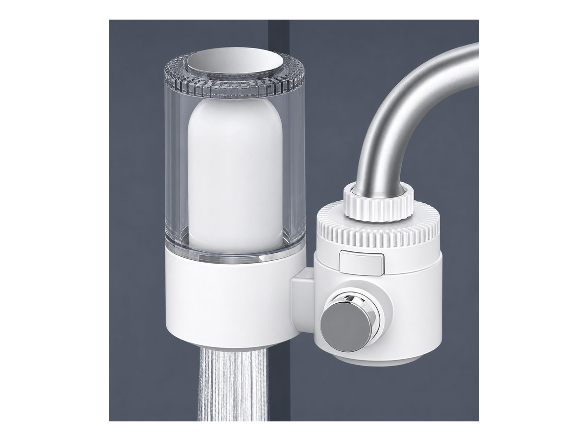
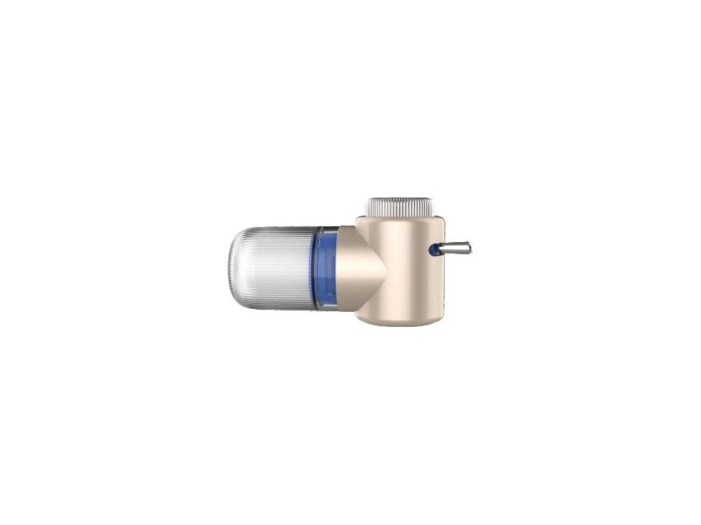
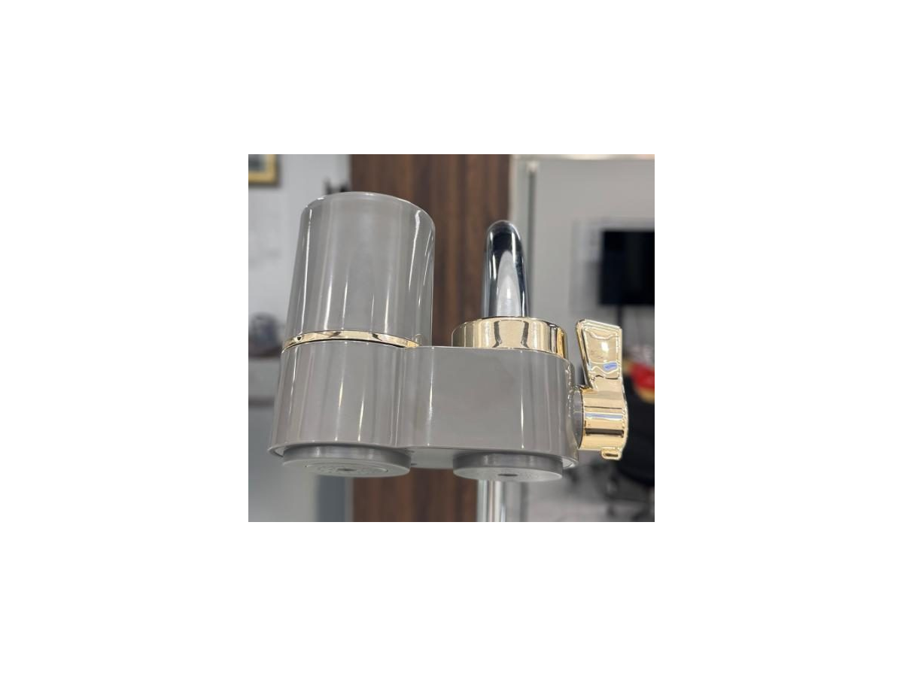

FaucetWT-T01
Classic faucet filter
SKU: WT-T01
MOQ: Confirm on enquiry
Home / Products / Faucet Filters / WT-T24

Faucet Filters
Microbubble faucet filter
WT-T24 — Microbubble faucet filter. Key specification: Rated flow 1.5-2 L/min. Specifications are confirmed per model and order.
Voltage / frequency is configurable to the target country. Other configurations are confirmed per order.
7 specification rows from the ROPureOEM catalogue.
| Rated flow | 1.5-2 L/min |
|---|---|
| Filtration precision | 2-5 µm (ceramic) |
| Water temperature | 5-38°C |
| Working pressure | 0.1-0.4 MPa |
| Water source | Municipal tap water |
| Cartridge life | 3-6 months |
| Dimensions | Confirmed per order |
Specifications are taken from the ROPureOEM catalogue. Where a value is not yet confirmed, it is listed as “Confirmed per order” — we do not publish unconfirmed figures.

FaucetClassic faucet filter
SKU: WT-T01
MOQ: Confirm on enquiry
 Faucet
Faucet360° rotatable faucet filter
SKU: WT-T13
MOQ: Confirm on enquiry
 Faucet
FaucetTurbine LED faucet filter
SKU: WT-T14
MOQ: Confirm on enquiry

Faucet270° rotatable faucet filter
SKU: WT-T17
MOQ: Confirm on enquiry